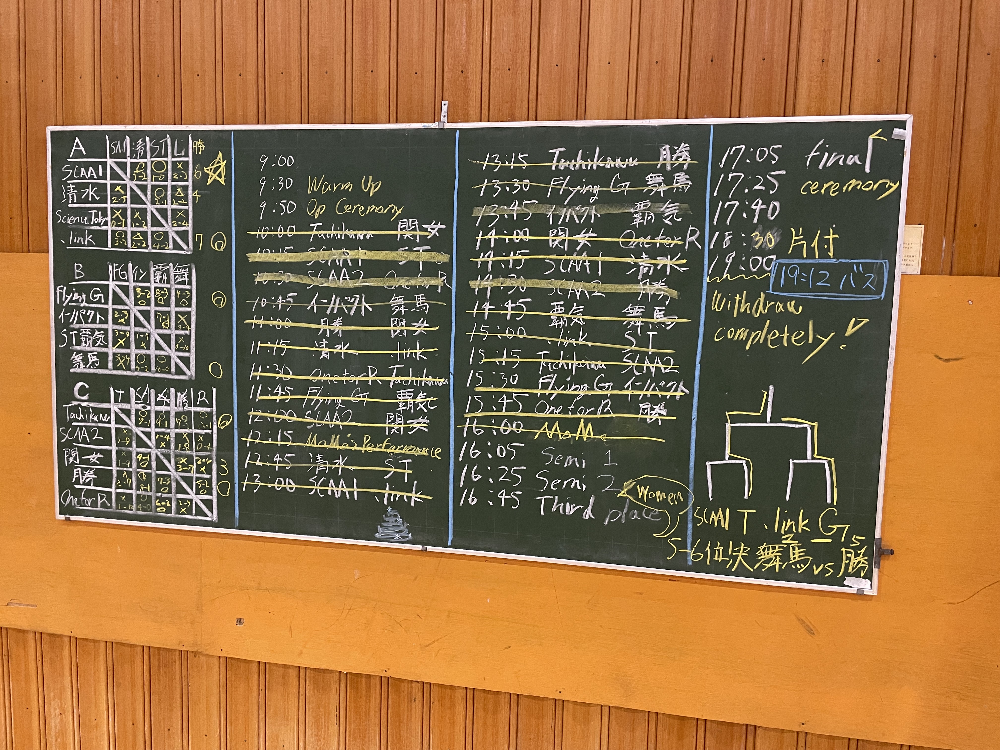

2026 香港日本サイクルサッカー交流戦において、東京科学大学からは2チームが出場し、 結果は以下の通りとなりました。
-
Science Tokyo
福田・山本ペア
予選リーグ敗退 -
ST 覇気
牧野・柳井ペア
予選リーグ敗退
たちかわ創造舎で開催された本大会ですが、東京科学大学は２チームとも予選リーグ敗退という結果になりました。
Science Tokyoの福田・山本ペアは予選リーグでは拮抗した展開が続きました。 全ての試合で1,2点差という接戦となりましたが、ここぞで得点を取ることができず一勝をつかむことができませんでした。
ST 覇気の牧野・柳井ペアは今大会参加者内で競技歴が最短ながらも格上相手に健闘。 Flying Gravity（香港代表チーム）に対して３点を取る白熱した展開を演出しました。 しかし、細かなミスをしっかりと拾われて勝利をつかむことはできませんでした。
また、本部活OBのペア、たちかわCSCの赤津・小髙ペアが優勝を収めました。
来年こそは大会で学生が社会人に勝てるように部内で練習に励みます。

試合結果（左：予選リーグ、右：決勝トーナメント）
今大会では改めて社会人の選手との差を感じました。 昨年行われた香港との交流戦と比べ相手がより本気となって戦ってくれている感触がありました。 一方で、相手に対して得点で優位に立つ展開を作ることができず、微差ながらビハインドの展開ばかりとなってしまいました。 普段の練習とは違った緊張感の中で、思うような攻撃を組み立てることができなかったことが原因の一つだと思います。 自分たちが思う理想のサイクルサッカーの形を実現できるように実践多くを積み、勝てるように頑張りたいと思います。